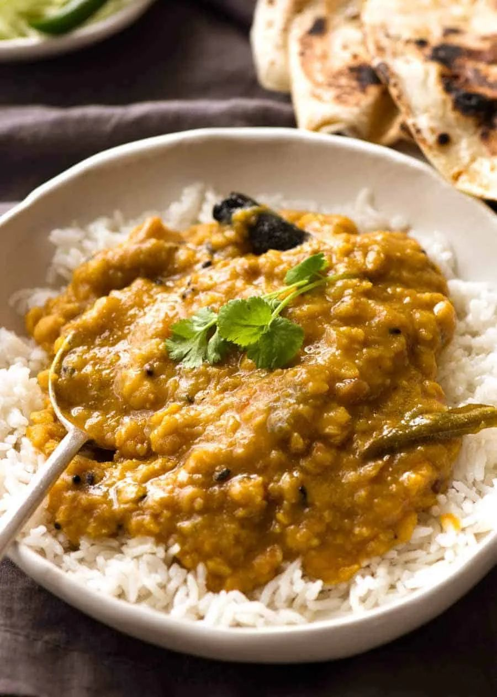

Dal (Yellow Split Pea Curry)

- Meal
- Dinner
- Serves
- 6
- Protein
- legume (yellow split peas)
- Cook
- stovetop · 25 min active / 2 hr total (1 hr soak + 90 min simmer) · easy
- Make-ahead / leftovers
- yes (fridge 4 days, freezes well) / yes
- Mediterranean
- yes
- WW tier
- light
- Status
- Trying out (probation)
RecipeTin Eats' everyday dal: yellow split peas simmered with onion, lots of garlic and ginger, tomato, cumin, and turmeric until thick and porridgey, finished with garam masala and a sizzling cumin-onion butter (tadka) poured over the top. Mild, golden, cheap, and freezes perfectly.
Ingredients
Dal
- 2 Tbsp oil + 2 Tbsp butter (or 4 Tbsp ghee)
- 2 onions, finely chopped
- 10 garlic cloves, finely chopped
- 2 Tbsp minced ginger
- 2 tomatoes, chopped (or 1 cup canned diced)
- 1 tsp ground cumin
- 2 cups dried yellow split peas (or chana dal), rinsed
- 8 cups water
- 1 tsp turmeric
- 1 1/2 tsp salt
- 1/4 tsp garam masala
Tadka (optional but worth it)
- 3 Tbsp butter (or half butter, half oil)
- 1/2 small onion, halved and thinly sliced
- 2 tsp cumin seeds (or 1 tsp ground cumin, added for just 10 seconds)
To serve: brown basmati rice (house rule), cilantro, plain yogurt, naan or whole-wheat tortillas
Method
- Rinse the split peas and soak in plenty of water for 1 hour; drain.
- Heat the oil and butter in a heavy pot over medium-high. Cook the onions until soft, ~5 minutes.
- Lower to medium; add garlic and ginger for 1 minute until the garlic just turns golden.
- Add the tomatoes and cumin; cook ~2 minutes until they break down to a paste.
- Add the split peas, water, turmeric, and salt. Bring to a simmer, cover, and simmer gently 1 hour, stirring a few times.
- Uncover and simmer 30 minutes more, stirring now and then, until thick like porridge — some peas whole, some broken down. Stir in the garam masala; adjust salt.
- Tadka: heat the butter in a small pan over medium; add cumin seeds until they turn slightly golden, then the sliced onion until tinged with gold. Pour sizzling over the dal and stir.
- Serve over brown basmati with cilantro and a spoon of yogurt.
Notes
- Scaled ×2 from RecipeTin Eats' 1 cup dal / serves 3–4.
- Kid heat / one-offs dropped: Nagi's green cayenne chilies, dried chilies, curry leaves, and black mustard seeds are all optional in the original and left out — curry leaves and mustard seeds are specialty-store items. The dal is mild and still deeply flavored.
- Yellow split peas are in the dried-bean aisle (Goya or store brand); chana dal works if you ever find it. Red lentils cook in ~25 minutes if that's what you have (skip the soak).
- Freeze in quart bags for a dump-and-heat night.
- Not Slow Cooker Chana Saag (chickpeas + spinach) or Curry Chicken — a split-pea dal, no meat.
- Mediterranean ✓ (legume, vegetables, brown rice, some olive oil; butter/ghee is the fat — 3 of 4). light.